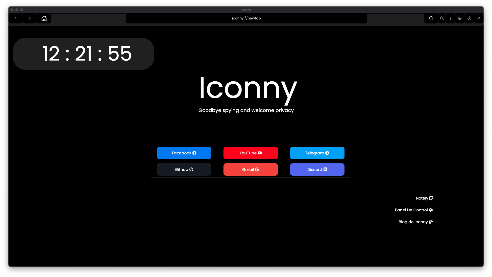
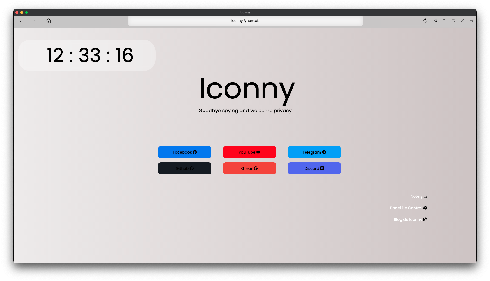

Iconny 18 "NewAge" Stable el asentamiento final en todas las plataformas y la renovacion constante
Escrito por Admin 31/04/2021

Despues de 15 dias de la ultima version y de casi 1 mes sin ningun blog hemos anunciado el lanzamiento de Iconny 18 en nombre codigo NewAge siendo
la primera actualizacion fuera de lo planeado de iconny 15, esta update es pequeña pero retoca y crea algunas novedades interesantes ademas de renovacion total en algunos aspectos
Novedades
Como primera novedad es MonocromatixV5.5 que ahora trae mejores temas predeteminados mas detallados ademas de retrocompatibilidad con temas de MonocromatixV5, 5.1, 5.2 , 5.3
Soporte para temas sin blur, y nuevos temas predeteminados, ClassicDark y ClassicWhite imitando a las primeras versiones de iconny y la estetica de MonocromatixV2
Ademas se mejoraron las paletas de colores del tema Dark haciendolo un poco mas negro y el tema White menos gris
Tambien se agrego una opcion personalizada para poner los temas manualmente y los temas nuevos ahora sus esquinas son rendodeadas y botones sin contorno

MonocromatixV5.5 Themes Classic
Novedades de Iconny
Para empezar trae la eliminacion de los buscadores de la pantalla de bienvenida y han sido reemplazados por webapps de Notely que se considera usadas
por los usuarios de iconny ademas el panel de control ha sido totalmente rediseñado ademas de el cambios de temas es mas facil e intuitivo
tambien ahora se puede cambiar el buscador entre DuckDuckgo, Google Search, Bing Search, ademas tambien se puede visitar este blog desde el panel de control
y la nueva seccion de agradacimientos a los proyectos, empresas y personas que colaboran para hacer este proyecto posible y ademas de Notely dentro del panel de control
ademas este nuevo panel de control cambia segun el tema elegido y ademas el acerca de y agradacimientos cambia segun el tema
otro cambio es que ahora existe la seccion al iniciar el navegador el Panel de control seguro que sirve para reconfigurar el navegador y recuperar datos de Notely
tambien es la primera version de Iconny en donde se les da soporte a las tres plataformas siendo la primera vez que se le da soporte oficial a Windows 10
ya que Linux recibio soporte desde el nacimiento del navegador, MacOs desde la version 12 Sfogiatelle y ahora Windows desde la version 18 NewAge
 Nuevo Panel de Control
Nuevo Panel de Control
Tambien se estrena un nuevo logo hecho por el diseñador Ergo Alejandro Design

Otros cambios menores
Soporte para temas sin blur, y nuevos temas predeteminados, ClassicDark y ClassicWhite imitando a las primeras versiones de iconny y la estetica de MonocromatixV2
Ademas se mejoraron las paletas de colores del tema Dark haciendolo un poco mas negro y el tema White menos gris
Tambien se agrego una opcion personalizada para poner los temas manualmente y los temas nuevos ahora sus esquinas son rendodeadas y botones sin contorno
Novedades de Iconny
Para empezar trae la eliminacion de los buscadores de la pantalla de bienvenida y han sido reemplazados por webapps de Notely que se considera usadas
por los usuarios de iconny ademas el panel de control ha sido totalmente rediseñado ademas de el cambios de temas es mas facil e intuitivo
tambien ahora se puede cambiar el buscador entre DuckDuckgo, Google Search, Bing Search, ademas tambien se puede visitar este blog desde el panel de control
y la nueva seccion de agradacimientos a los proyectos, empresas y personas que colaboran para hacer este proyecto posible y ademas de Notely dentro del panel de control
ademas este nuevo panel de control cambia segun el tema elegido y ademas el acerca de y agradacimientos cambia segun el tema
otro cambio es que ahora existe la seccion al iniciar el navegador el Panel de control seguro que sirve para reconfigurar el navegador y recuperar datos de Notely
tambien es la primera version de Iconny en donde se les da soporte a las tres plataformas siendo la primera vez que se le da soporte oficial a Windows 10
ya que Linux recibio soporte desde el nacimiento del navegador, MacOs desde la version 12 Sfogiatelle y ahora Windows desde la version 18 NewAge
Nuevo Panel de Control
Tambien se estrena un nuevo logo hecho por el diseñador Ergo Alejandro Design
Otros cambios menores
Tambien se estrena un nuevo logo hecho por el diseñador Ergo Alejandro Design
Otros cambios menores
Esperemos que estos cambios sean de agrado esta update es pequeña pero interesante
Nos vemos en Iconny 19
Descargar